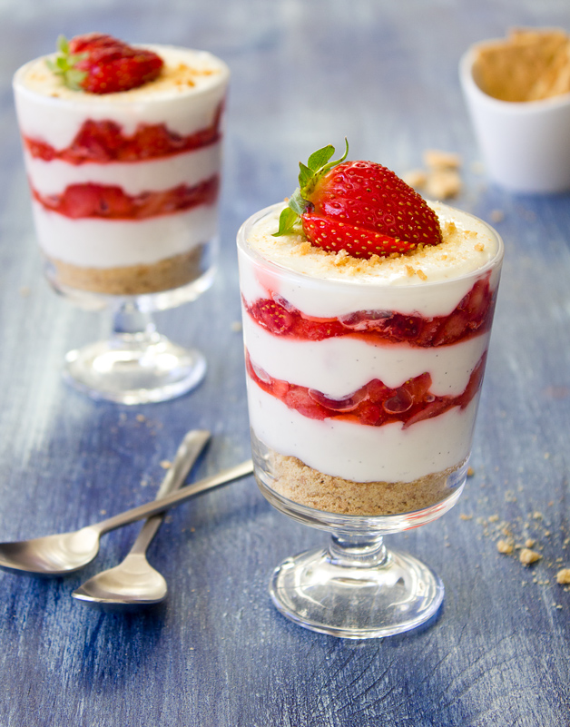

Ingredients:
- 4 cups sliced strawberries, divided 1/4 cup granulated sugar
- 1 cup fat-free ricotta cheese
- 1/2 cup (4 ounces) 1/3-less-fat cream cheese, softened
- 1/4 cup powdered sugar
- 1 tablespoon water
- 1 teaspoon vanilla extract
- 1 cup amaretti cookie crumbs (about 8 cookies)
- 1/2 cup frozen reduced-calorie whipped topping, thawed
- 2 tablespoons slivered almonds,
Method:
- Place 2 cups of strawberry slices and granulated sugar in a blender or food processor, and process until smooth. Set strawberry puree aside.
- Combine ricotta and next 4 ingredients (ricotta through vanilla) in a medium bowl; stir well with a whisk.
- Spoon 2 tablespoons cookie crumbs into each of 4 parfait glasses.
- Top each portion with 2 tablespoons strawberry puree, 1/4 cup strawberry slices, and 3 tablespoons ricotta mixture.
- Repeat the layers. Drizzle the remaining strawberry puree over each serving.
- Chill for 2 hours. Top each parfait with 2 tablespoons whipped topping and 1 1/2 teaspoons almonds.